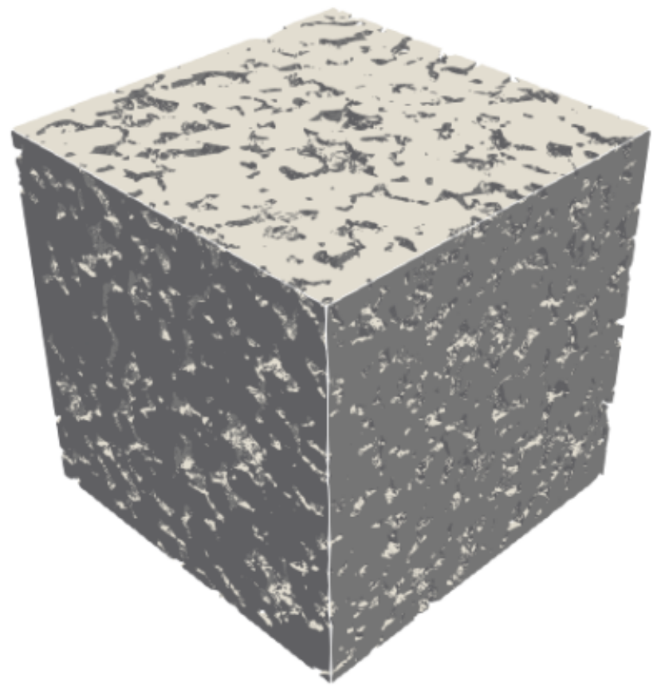
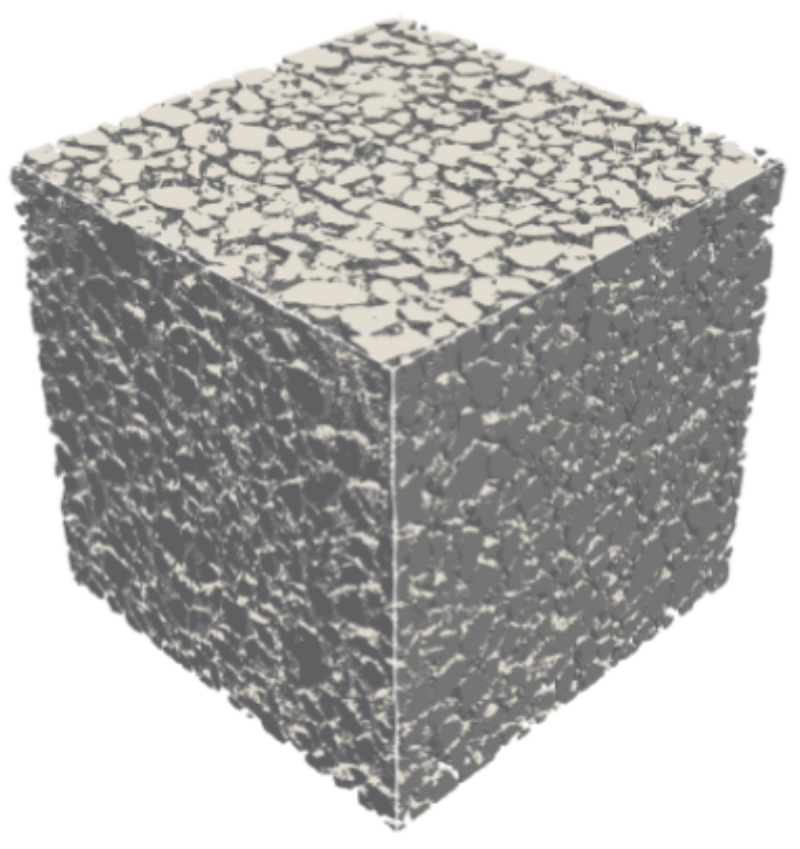
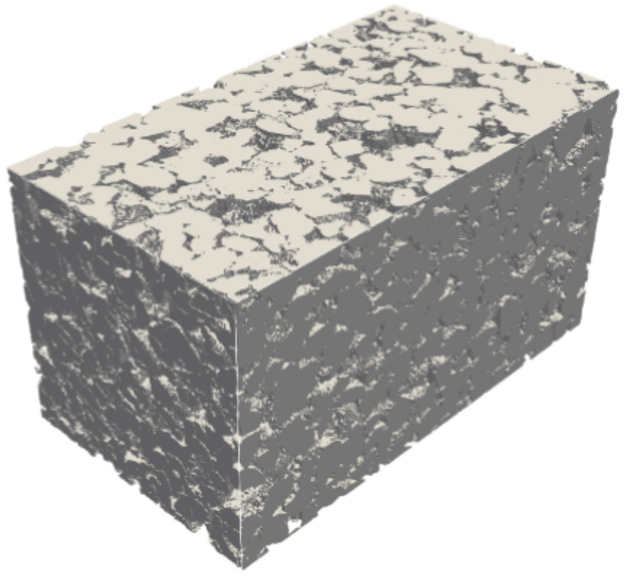
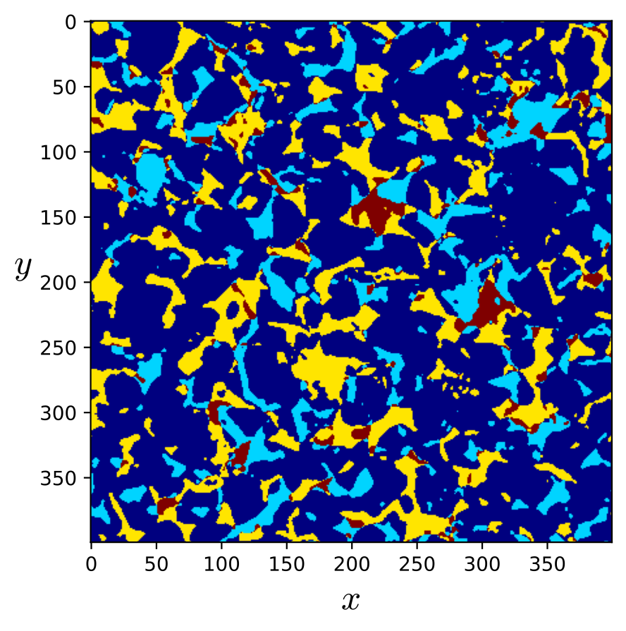
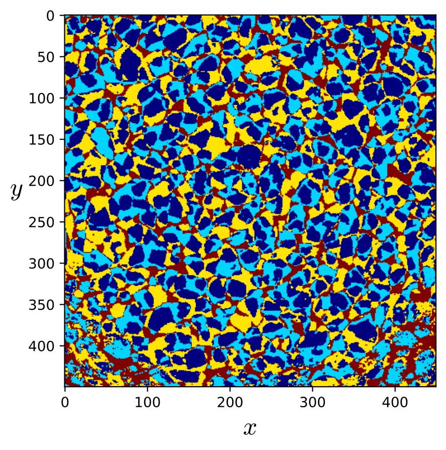
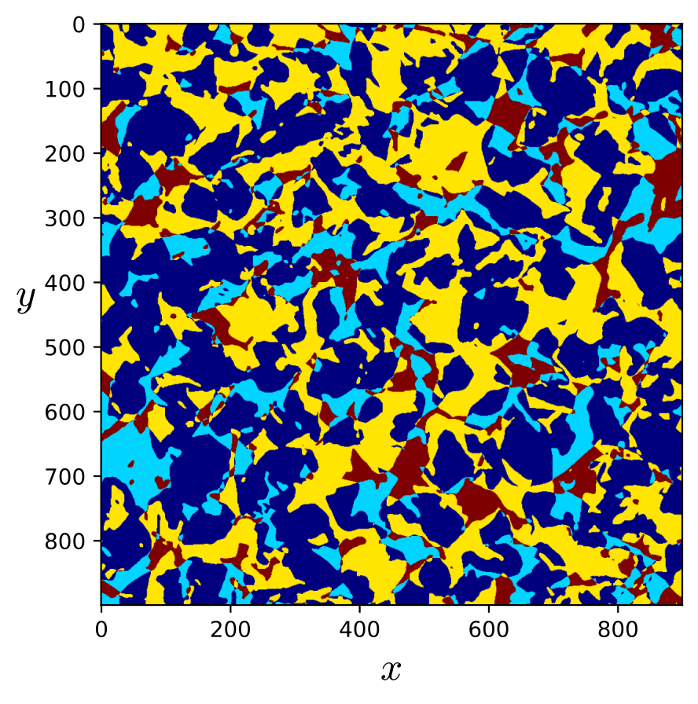
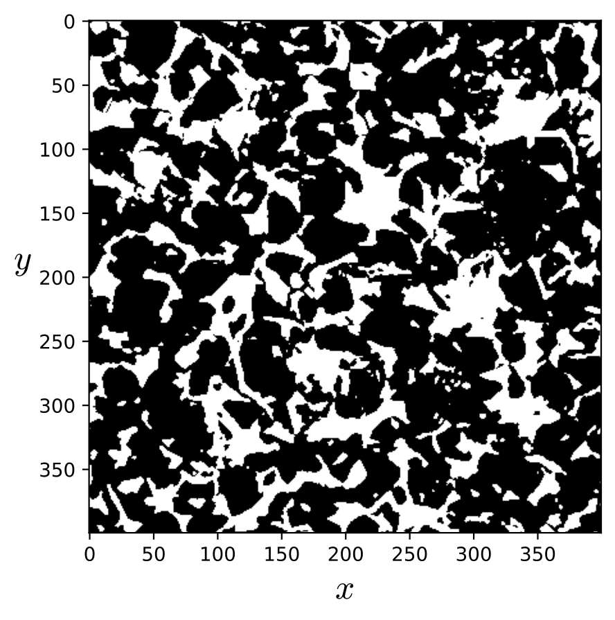
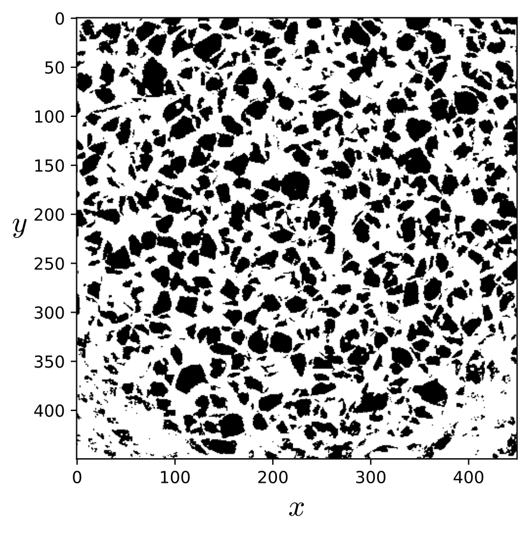
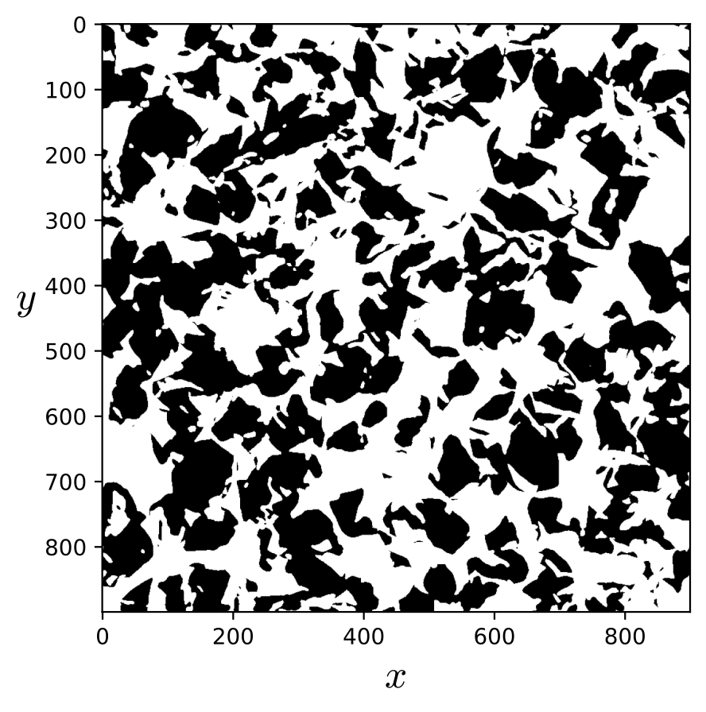
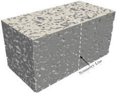

3D Digital Rocks¶
The use of X-ray microtomography to generate digital rock images has significantly advanced the characterization of porous materials. Three-dimensional images provide valuable insights into complex pore networks, grain arrangements, and fluid-flow behavior, which can be investigated through numerical simulations.
In this benchmark section, three-dimensional digital rock images available in the literature are used with the
lbpm_permeability_simulator to estimate absolute permeability. Figs. 17 - 19 illustrates the pore
structures of some digital rocks considered in this section. The datasets are available from the following sources:
Berea sandstone (a): https://figshare.com/articles/dataset/Berea_Sandstone/1153794/2
LV60A sandpack (b): https://figshare.com/articles/dataset/LV60A_sandpack/1153795/2
Bentheimer sandstone (c): https://digitalporousmedia.org/published-datasets/drp.project.published.DRP-218
C2 carbonate (d): https://figshare.com/articles/dataset/C2_carbonate/1189258?file=3229766
 |
 |
 |
{kind=link}
{kind=link}
{kind=link}
Table 1 summarizes the parameters of the digital porous media analyzed, including the image sizes, the resolution of the 3D images (voxel size), as well as the corresponding porosity values.
Rock type |
Size (\(N_x \times N_y \times N_z\)) |
Resolution (\(\mu\text{m}\)) |
Porosity |
|---|---|---|---|
Berea (a) |
\(400 \times 400 \times 400\) |
5.345 |
19.8 |
LV60A (b) |
\(450 \times 450 \times 450\) |
10.002 |
36.8 |
Bentheimer (c) |
\(900 \times 900 \times 1600\) |
1.66 |
23.55 |
C2 (d) |
\(400 \times 400 \times 400\) |
5.345 |
16.8 |
Absolute Permeability - Numerical Setup¶
The digital rocks considered in the present analysis are simulated using both the symmetry and mixing-layer schemes to compare
their effects on the results. As discussed in section Boundary Conditions, symmetric images
provide more accurate results in periodic domains (BC=0) than those obtained using the mixing-layer scheme. Therefore, the
present analysis aims to assess the influence of the mixing-layer scheme on the computed absolute permeability.
The LBPM setup for the .db file follows the structure demonstrated in the toogles below, the first one for mixing layers scheme and
the second one for the symmetric image. The symmetric porous domain needs be created outside of LBPM framework (mirrored in z-axis) and
inputed as .raw file in a format of uint8 or int8.
Click here to open: .db example with mixing layers scheme
MRT {
tau = 1.0
F = 0.0, 0.0, 1.0e-6
timestepMax = 60000
tolerance = 0.001
}
Domain {
Filename = "Berea.raw"
ReadType = "8bit" // data type
N = 400, 400, 400 // size of original image
nproc = 2, 2, 2 // process grid
n = 200, 200, 200 // sub-domain size
voxel_length = 5.345 // voxel length (in microns)
ReadValues = 0, 1, 2 // labels within the original image
WriteValues = 1, 0, 2 // associated labels to be used by LBPM
InletLayers = 0, 0, 5 // specify 10 layers along the z-inlet
OutletLayers = 0, 0, 5 // specify 10 layers along the z-inlet
BC = 0 // boundary condition type (0 for periodic)
}
Visualization {
write_silo = true // write SILO databases with assigned variables
save_pressure = true // save pressure field within SILO database
save_velocity = true // save velocity field within SILO database
}
To illustrate the aplication of mixing layers in 3D Digitla Rokcs, Figures 20 - 22 show the scheme where the superposition of the fluid nodes present in the original inlet and outlet planes are applied. Specifically, if a position \((y, z)\) corresponds to a fluid node at either the inlet or the outlet, the same position in the added layers is defined as a fluid node. Conversely, if the position \((y, z)\) corresponds to a solid node in both the inlet and the outlet planes, it is assigned as a solid node in the added layers. The resulting mixed layers are illustrated in the Figures 23 - 25. This procedure allows the inlet and outlet to be connected without the need to reflect the domain sample.
{kind=link}
 Fig. 20 - Berea mixing layers.¶ |
 Fig. 21 - LV60A mixing layers.¶ |
 Fig. 22 - Bentheimer mixing layers.¶ |
{kind=link}
{kind=link}
{kind=link}
{kind=link}
 Fig. 23 - Berea mixed-layer.¶ |
 Fig. 24 - LV60A mixed-layer.¶ |
 Fig. 25 - Bentheimer mixed-layer.¶ |
{kind=link}
{kind=link}
{kind=link}
Figure 27 illustrates the symmetry applied along the \(z\)-axis, in comparison
with the original image shown in Figure 26. As indicated in the toggle below, the image size in the input .db file
is doubled, which consequently doubles the computational cost.
Click here to open: .db example for symmetric image scheme
MRT {
tau = 1.0
F = 0.0, 0.0, 1.0e-6
timestepMax = 60000
tolerance = 0.001
}
Domain {
Filename = "Berea.raw"
ReadType = "8bit" // data type
N = 400, 400, 400 // size of original image
nproc = 2, 2, 2 // process grid
n = 200, 200, 200 // sub-domain size
voxel_length = 5.345 // voxel length (in microns)
ReadValues = 0, 1, 2 // labels within the original image
WriteValues = 1, 0, 2 // associated labels to be used by LBPM
InletLayers = 0, 0, 5 // specify 10 layers along the z-inlet
OutletLayers = 0, 0, 5 // specify 10 layers along the z-inlet
BC = 0 // boundary condition type (0 for periodic)
}
Visualization {
write_silo = true // write SILO databases with assigned variables
save_pressure = true // save pressure field within SILO database
save_velocity = true // save velocity field within SILO database
}
Fig. 26 - Berea sandstone.¶ |
 Fig. 27 - Berea sandstone symmetric in z-axis.¶ |
{kind=link}
Results for BC = 0¶
Table 2 presents the results obtained for the samples listed in Table 1. The percentage deviation (\(\Delta_{\%}\)) between the symmetry and mixing-layer schemes is calculated using the permeability obtained with the symmetric scheme as the reference. The results indicate that the influence of the mixing-layer scheme can vary significantly depending on the degree of matching between the inlet and outlet planes and on the pore geometry of the sample. Additionally, isotropy analyses were performed by evaluating the absolute permeability along the \(x\), \(y\), and \(z\) directions.
| Rock type | \(K_{xx}\,[\mathrm{Da}]\) | \(K_{yy}\,[\mathrm{Da}]\) | \(K_{zz}\,[\mathrm{Da}]\) | ||||||
|---|---|---|---|---|---|---|---|---|---|
| Symmetric | Mixing layer | \(\Delta_{\%}\) | Symmetric | Mixing layer | \(\Delta_{\%}\) | Symmetric | Mixing layer | \(\Delta_{\%}\) | |
| Berea (a) | 1.972 | 1.565 | 21 | 1.881 | 1.516 | 19 | 1.803 | 1.615 | 10 |
| LV60A (b) | 39.21 | 36.63 | 7 | 35.67 | 33.17 | 7 | 35.89 | 34.47 | 4 |
| Bentheimer (c) | - | 2.538 | - | - | 2.405 | - | - | 2.787 | - |
| C2 (d) | 0.199 | 0.184 | 7 | 0.522 | 0.218 | 58 | 0.182 | 0.142 | 22 |